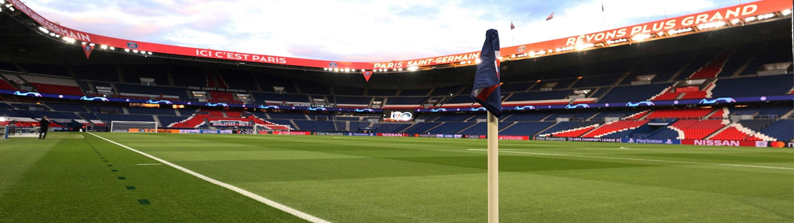

Park Des Princes
Parc des Princes: The Iconic Home of Paris Saint-Germain
Parc des Princes, located in Paris, France, is the revered home stadium of Paris Saint-Germain Football Club. With its rich history, passionate atmosphere, and world-class football, it stands as a symbol of excellence and the heart of Parisian football.
A Historic Venue
Parc des Princes has a long and storied history. Built in 1897, it has witnessed numerous memorable moments in football, including domestic triumphs and thrilling European encounters.
The Pride of Paris
Parc des Princes represents the pride of Paris and its love for football. It serves as a gathering place for fans from all walks of life, who come together to support their beloved team and create an electric atmosphere on matchdays.
A Theatre of Champions
As a venue for top-level football, Parc des Princes has hosted some of the greatest players and teams in the world. From classic French football legends to global superstars, it has been graced by footballing excellence.
The Rouge et Bleu Passion
Parc des Princes is home to Paris Saint-Germain's passionate fanbase. The roar of the crowd, the sea of blue and red scarves, and the passionate chants reverberate through the stadium, creating an unforgettable experience for both players and spectators.
A Modern Spectacle
The stadium has undergone significant renovations over the years, transforming it into a modern and world-class sporting venue. Its sleek design, comfortable seating, and excellent facilities provide a top-tier experience for fans.
A Footballing Fortress
Parc des Princes is renowned for its intimidating atmosphere for visiting teams. The passionate home support, known as the twelfth man, pushes the team forward and creates an unwelcoming environment for opponents.
A Stage for Glory
Parc des Princes has been witness to Paris Saint-Germain's rise to prominence. It has seen the club claim numerous domestic titles, create iconic moments, and establish itself as a force to be reckoned with in European football.
A Cultural Landmark
Parc des Princes is not only a stadium but also a cultural landmark in Paris. It has become an emblem of the city, symbolizing the passion, diversity, and vibrancy of the Parisian footballing community.
- Paris - France.
- 47,929 spectators.
- Second biggest Stadium in France.